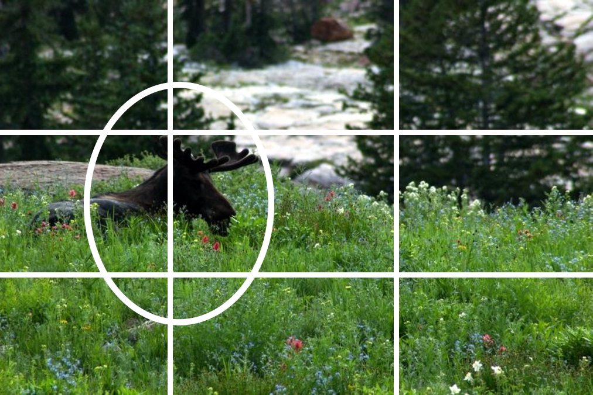
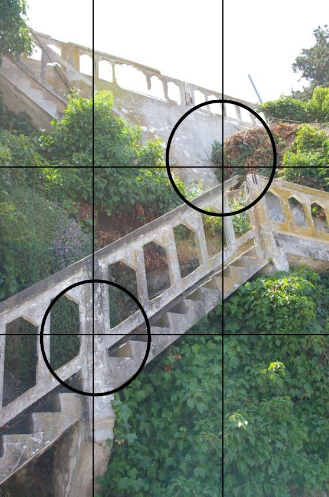
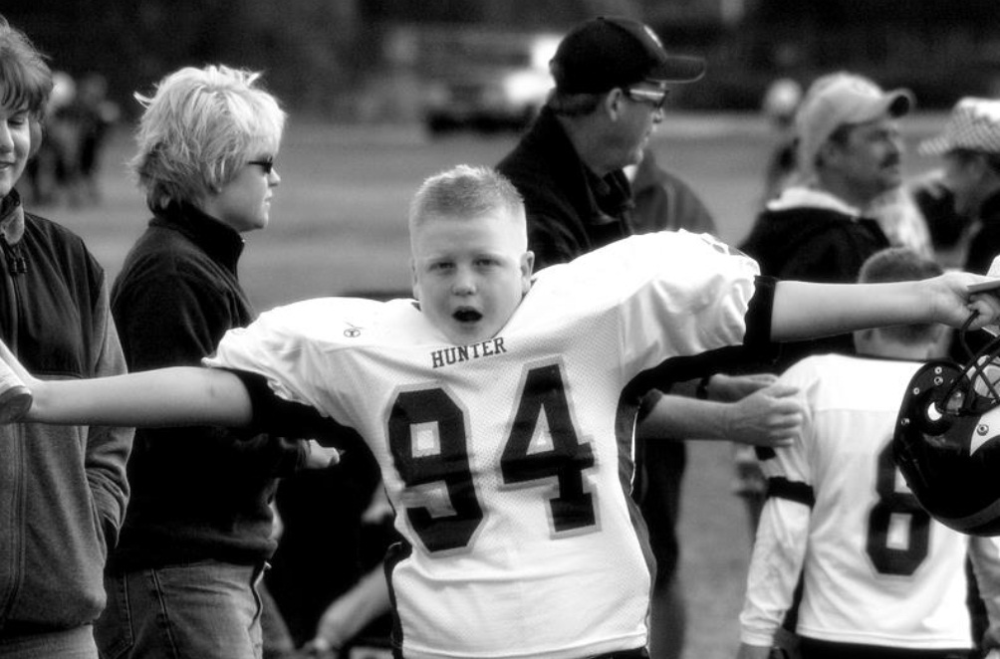

Photography:
Tips and Tricks
Source: Ann Howden, UEN Professional Development
To begin with
- Photography is about telling a story.
- Good photographers use an image to make a
point without words.
- People remember pictures of events long after
they remember the actual event or the words
that were spoken.
Thoughts about Yearbook Photography
- The essence of a yearbook is it’s photography
(80% is pictures).
- People look at the pictures before they read
the text.
- Include EVERYONE!
When on assignment…
Consider:
- Distance from subject
- Amount of light
- Type of activity. The further away you have to be, the better camera you
will need. (SLR vs. point and shoot)
- Candid photos are always better than posed. Capture emotion, expression and action.
Tip One: Use the Rule of Thirds
- View your pictures as a grid and make sure that
the subject of your picture is at one or more of
the intersecting lines.


Tip Two: Look your subject in the eye
- Take a photograph of a person, animal or
object from it’s eye level, not yours.
- This means get on the ground, get up high, and be
constantly on the move with your subject.
Tip Three: Simplify your background
- Keep your photo free of clutter.
- Keep backgrounds simple and plain.
- Avoid having extra people or subjects in your
photo.
- By keeping the background clean and simple,
you create an automatic focal point for your
picture.
Tip Four: Be a picture director
- Avoid taking “snapshots”.
- Direct your subject.
- Create a theme.
- Move objects around.
- Remember that you are in charge of the photo.

Tip Five: Alter your camera angle
- Take vertical pictures.
- Shoot holding your camera at an angle.
- Get above and below your subject for effect.
- Play with wide angle and zoom options.
Tip Six: Play with the flash
- Use the flash outdoors to correct for sun and
shadows.
- Don’t use the flash indoors…let the camera try
harder to find the natural light.
- Make sure you know the “flash range” of your
camera. Stay within the camera range to take a good shot
Tip Seven: Move in close…then get closer
- “Macro” photography is always appealing to the eye.
- Close-up photographs are generally more interesting.
- Make your subject fill the entire frame of your picture.
A few other thoughts about photography…
- Be spontaneous
- Take pictures of the unusual
- Use your photographs to show memories, not just to document events
- Be creative
- Think before you shoot
- Hold the camera steady (use a tripod when available)
General Camera Tips
- Digital is easier and faster
- Have a backup memory card for every event (precautionary)
- 4-6 megapixels is all you really need. Point and shoot vs. SLR
- Have a good file management system
- Back-up photos regularly
- Avoid cropping as much as possible
BACK
Animation
Introduction to Animation
- Animation is an illusion, a perception of motion.
- It is simply a moving or changing graphic image.
- Animation is a series of still images played back fast enough to trick our minds into believing that there is movement.
- Animation is defined as the act of making something come alive.
- It is concerned with the visual or aesthetic aspect of the project.
- Animation is an object moving across or into or out of the screen.
- Animation is an excellent way to increase appeal of a multimedia application and ensure return visits.
- Animation can be used to simplify complex concepts and visualize concepts.
- Animations can be simple, as in blinking text, marquee-like scrolling headlines, rotating logos, animated icons, Web buttons, 2-D action figures, 3-D action figures.
- Animation is possible because of a biological phenomenon known as persistence of vision and a psychological phenomenon called phi.
- In animation, a series of images are rapidly changed to create an illusion of movement.
Usage of Animation
- Artistic purposes
- Storytelling
- Displaying data (scientific visualization)
- Instructional purposes
Animation Guidelines
- Animations should impact not detract.
- Animate what we want users to notice.
- Animation should be appropriate to the mood and content of the application.
- Do not use too many animated objects per page.
- Animation that does the same thing over and over is annoying.
- Use transitions and special effects that help communicate message.
- Make sure animation loads quickly.
Animation By Computer
- Types of Animation
- Animation techniques
Types of Animation
Animation can be rendered in:
- 2-D space - 2-D animations are very simple and static.
- 2-1/2D space - An illusion of depth is created through shadowing, highlighting, and forced perspective, though in reality the image rests in two dimensions.
- 3-D space - Complicated and realistic animations are done in 3-D space.
Animation Techniques
- Methods of creating animation (types of animation): Cel animation & Path-based animation
- Computer animation
- Animation process
Type of Animation: Cel Animation
- Cel animation is a technique in which a series of progressively different graphics are used on each frame of movie film.
The term "cel" is derived from the clear celluloid sheets that were used for drawing each frame.
Cel animation begins with keyframes.
- Keyframes refer to the first and the last frame of an action.
Each keyframe is unique and illustrates a key event in the timeline of the animation. The difference between one keyframe and the next keyframe could be the result of a new position, color, shape, or any number of other characteristics or combinations of characteristics.
The frames in between the keyframes are drawn in the tweening process.
- Tweening depicts the action that takes place between keyframes. It is the process of drawing “between’’ frames. It requires at least two keyframes.
Tweening is followed by the pencil test.
Type of Animation: Path Animation
- The movement of an object happened along a predetermined path on the screen.
- The path could be a straight line or any number of curves.
- The object does not change, although it might be resized or reshape.
Computer Animation
- Electronically generated movement of anything on your computer screen.
- Computer animation is very similar to cel animation.
- The primary difference is in how much must be drawn by the animator and how much is automatically generated by the software.
- Kinematics is the study of the movement and motion of structures that have joints.
- Inverse kinematics is the process of linking objects, and defining their relationship and limits.
Special Animation Effects
- Morphing is an effect in which a still or moving image is transformed into another. It is a process of blending together two images into a series of images
Morphing uses frames to create the illusion of one object changing into another.
In Adobe Flash, morphing on simple vector graphics can be created by using a process called shape tweening.
- Warping: Distortion of an image (only one image is used)
- A film loop consists of a series of animated frames looped to play over and over again.
- Trail effect is when the image from the previous frame is not completely erased so that it appears in the new frame.
Onion Skinning
- Is a common feature provided by animation software.
- Enables animators to see previous and following frames while they are drawing the current frame.
Flipbook
- Digital animation is based on flipbooks. A flipbook is a book with a series of pictures varying gradually from one page to the next, so that when the pages are turned rapidly, the pictures appear to animate.
Sampling Rate & Playback Rate
Two rates are used to measure animation: sampling rate and playback rate
- Sampling rate refers to the number of images created per second and available to be used in an animation.
- Playback rate is the number of frames displayed per second when animation is being viewed. Playback rate cannot be higher than the sampling rate.
To create the illusion of motion effectively, the playback rate of animation must be between 24 and 30 frames per second at full-motion video standards.
On the Web, the standard is generally 12 to 15 frames per second.
Anything less than 12 frames per second, however, will create a jerky motion as the eye detects the changes from one frame to the next.
File Formats used in Animation
- Animated GIF
- Also known as GIF89a
- Requires no plug-in for viewing in browsers
- Is supported by all major browsers
- SWF
- This file format is for viewing only
- To view SWF files, Adobe Flash Player must be installed on user’s computer.
- QuickTime (MOV)
- Apple’s animation and movie file format
- Is non-platform specific
- MPEG (Moving Picture Experts Group)
- Moving Picture Experts Group created standards for interactive animation and video.
- MPEG files tend to be much smaller and of much higher quality for the size since MPEG uses very sophisticated compression techniques.
- AVI (Audio Video Interleave)
- Microsoft’s animation and movie file format for Windows
- Although AVI files are native to Windows, other programs and players will also recognize and play them.
.dir and .dcr - Director files.
.fli and .flc - AnimatorPro files.
.max - 3D Studio Max files.
.pics - SuperCard and Director files.
.fla and .swf - Flash files.
GIF89a file format:
It is a version of the GIF image format.
GIF89a allows multiple images to be put into a single file and then be displayed as an animation in the Web browser.
Applications like BoxTop Software's GIFmation or ULead's GIF Animator are needed to create GIF89a animation.
Making Successful Animations
- Use animation carefully and sparingly.
- High quality animations require superior display platforms and hardware, as well as raw computing horsepower.
- File compression is very important when preparing animation files for the Web.
Some Animations Tools
- Macromedia's Flash.
- Kai's Power Tools' Spheroid Designer.
- Alias|Wavefront's Maya.
- NewTek's Lightwave.
- Toon Boom Harmony
Summary
- Animation is visual change over time and adds great power to multimedia.
- Cell animation uses a series of progressively different graphics on each frame of movie film.
- Computer animation has eased the process of creating animation.
- Many file formats are designed specifically to contain animation.
References
- Tay Vaughan (2014). Multimedia: Making it Work. 9th edition. McGraw-Hill Osborne Media.
- Calleen Coorough & Jim Shuman (2006). Multimedia For The Web Revealed,, Thomson Learning. ISBN:1-4188-3953-1.
- Lindsay Kolowich (2019). How to Make an Animated GIF in Photoshop [Tutorial]. Hubspot. https://blog.hubspot.com/marketing/how-to-create-animated-gif-quick-tip-ht
BACK